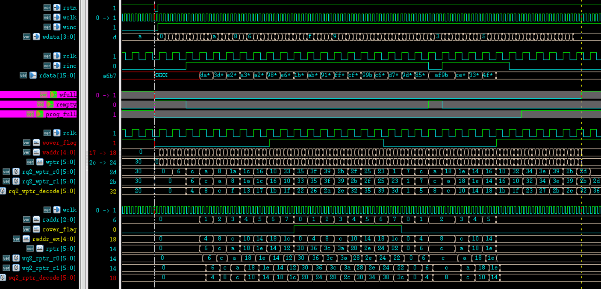

FIFO (First In First Out) is a memory frequently used in asynchronous data transmission. Its characteristic is that data is first in, first out (last in, last out). In fact, the asynchronous transmission problem of multi-bit wide data, whether from a fast clock to a slow clock domain or from a slow clock to a fast clock domain, can be handled with FIFO.
FIFO Principle
Workflow
After reset, under the control of the write clock and status signals, data is written into the FIFO. The write address of the RAM starts from 0. Each time data is written, the write address pointer increments by one to point to the next memory cell. When the FIFO is full, data can no longer be written; otherwise, data will be lost due to overwriting.
When the FIFO data is in a non-empty or full state, under the control of the read clock and status signals, data can be read out from the FIFO. The read address of the RAM starts from 0. Each time data is read, the read address pointer increments by one to point to the next memory cell. When the FIFO is read empty, no more data can be read; otherwise, the read data will be wrong.
The storage structure of the FIFO is dual-port RAM, so reading and writing can be performed simultaneously. The typical asynchronous FIFO structure diagram is shown below. The ports and internal signals will be explained during code writing.

Read/Write Timing
Regarding write timing, as long as the FIFO data is not full, write operations can be performed; if the FIFO is full, writing more data is prohibited.
Regarding read timing, as long as the FIFO data is not empty, read operations can be performed; if the FIFO is empty, reading more data is prohibited.
In any case, during a period of normal FIFO read/write, if reading and writing are performed simultaneously, the FIFO write rate must not be greater than the read rate.
Read Empty State
At the beginning of reset, the FIFO has no data, and the empty status signal is valid. After data is written into the FIFO, the empty status signal is pulled low and becomes invalid. When the read data address catches up with the write address, that is, when the read and write addresses are equal, the FIFO is in the empty state.
Because it is an asynchronous FIFO, when comparing read and write addresses, synchronization register-tapping logic is required, which takes a certain amount of time. Therefore, the empty status indicator signal is not real-time and has a certain delay. If new data is written into the FIFO during this delay period, there may be a phenomenon where the empty status indicator signal is valid but there is actually data in the FIFO.
Strictly speaking, this empty status indication is wrong. However, the purpose of generating the empty state is to prevent read operations from reading data from an empty FIFO. When the empty status signal is generated, the FIFO actually has data, which is equivalent to judging the empty status signal in advance. At this time, it is safe to stop reading FIFO data. Therefore, this design is fine from an application perspective.
Write Full State
At the beginning of reset, the FIFO has no data, and the full signal is invalid. After data is written into the FIFO, if no read operation is performed or the read rate is relatively slow, a full status signal will be generated as soon as the write data address exceeds the read data address by one FIFO depth. At this time, the write address and the read address are also equal, but their meanings are different.

At this time, an extra 1 bit is often used as an extension bit for the read and write addresses respectively, to distinguish whether the FIFO is empty or full when the read and write addresses are the same. When the read/write addresses and extension bits are all the same, it indicates that the amount of written data and read data is equal, and the FIFO is empty. If the read/write addresses are the same but the extension bits are opposite, it indicates that the amount of written data has exceeded the amount of read data by one FIFO depth, and the FIFO is full. Of course, the premise for this condition is that the empty state prohibits read operations and the full state prohibits write operations.
Similarly, due to the existence of asynchronous delay logic, the full status signal is not real-time. But it is also equivalent to judging the full status signal in advance. At this time, not performing FIFO write operations will not affect the correctness of the application.
FIFO Design
Design Requirements
To design a FIFO applicable to various scenarios, the following requirements are proposed:
- (1) The FIFO depth and width are parameterized, output empty and full status signals, and output a configurable full status signal. When the internal data in the FIFO reaches the configured parameter quantity, pull this signal high.
- (2) The input data and output data bit widths can be inconsistent, but the write data and write address widths must be consistent with the read data and read address widths. For example, the write data width is 8 bits, and the write address width is 6 bits (64 data items). If the output data width is required to be 32 bits, the output address width should be 4 bits (16 data items).
- (3) The FIFO is asynchronous, that is, the read and write control signals come from different clock domains. Before outputting the empty and full status signals, the read and write address signals should be synchronized using Gray code, and the data transmission errors during synchronization by register tapping should be reduced by reducing the toggling of multi-bit signals. The conversion between Gray code and binary is shown below.

Dual-Port RAM Design
The RAM port parameters are configurable, and the read/write bit widths can be inconsistent. It is recommended that when defining the memory array, take the parameters of the longer address width and shorter data width as a reference, so that array variables can be easily selected and accessed.
The Verilog description is as follows.
Example
#( parameter AWI = 5 ,
parameter AWO = 7 ,
parameter DWI = 64 ,
parameter DWO = 16
)
(
input CLK_WR , //write clock
input WR_EN , //write enable
input [AWI-1:0] ADDR_WR ,//write address
input [DWI-1:0] D , //write data
input CLK_RD , //read clock
input RD_EN , //read enable
input [AWO-1:0] ADDR_RD ,//read address
output reg [DWO-1:0] Q //read data
);
//Output width is greater than input width, find the expansion multiple and the corresponding number of bits
parameter EXTENT = DWO/DWI ;
parameter EXTENT_BIT = AWI-AWO > 0 ? AWI-AWO : 'b1 ;
//Input width is greater than output width, find the reduction multiple and the corresponding number of bits
parameter SHRINK = DWI/DWO ;
parameter SHRINK_BIT = AWO-AWI > 0 ? AWO-AWI : 'b1;
genvar i ;
generate
//Data width expansion (address width reduction)
if (DWO >= DWI) begin
//Write logic, write once per clock
reg [DWI-1:0] mem [(1<<AWI)-1 : 0] ;
always @(posedge CLK_WR) begin
if (WR_EN) begin
mem[ADDR_WR] <= D ;
end
end
//Read logic, read 4 times per clock
for (i=0; i<EXTENT; i=i+1) begin
always @(posedge CLK_RD) begin
if (RD_EN) begin
Q[(i+1)*DWI-1: i*DWI] <= mem[(ADDR_RD*EXTENT) + i ] ;
end
end
end
end
//=================================================
//Data width reduction (address width expansion)
else begin
//Write logic, write 4 times per clock
reg [DWO-1:0] mem [(1<<AWO)-1 : 0] ;
for (i=0; i<SHRINK; i=i+1) begin
always @(posedge CLK_WR) begin
if (WR_EN) begin
mem[(ADDR_WR*SHRINK)+i] <= D[(i+1)*DWO -1: i*DWO] ;
end
end
end
//Read logic, read once per clock
always @(posedge CLK_RD) begin
if (RD_EN) begin
Q <= mem[ADDR_RD] ;
end
end
end
endgenerate
endmodule
Counter Design
The counter is used to generate read/write address information. Its bit width is configurable. There is no need to set an end value; just let it overflow and automatically count again. The Verilog description is as follows.
Example
#(parameter W )
(
input rstn ,
input clk ,
input en ,
output [W-1:0] count
);
reg [W-1:0] count_r ;
always @(posedge clk or negedge rstn) begin
if (!rstn) begin
count_r <= 'b0 ;
end
else if (en) begin
count_r <= count_r + 1'b1 ;
end
end
assign count = count_r ;
endmodule
FIFO Design
This module is the main part of the FIFO. It generates read/write control logic and produces empty, full, and programmable full status signals.
Due to space limitations, only the logic code for read data width greater than write data width is given here. For the code description where write data width is greater than read data width, see the attachment.
Example
#( parameter AWI = 5 ,
parameter AWO = 3 ,
parameter DWI = 4 ,
parameter DWO = 16 ,
parameter PROG_DEPTH = 16) //Configurable depth
(
input rstn, //Read and write use one reset
input wclk, //write clock
input winc, //write enable
input [DWI-1: 0] wdata, //write data
input rclk, //read clock
input rinc, //read enable
output [DWO-1 : 0] rdata, //read data
output wfull, //write full flag
output rempty, //read empty flag
output prog_full //programmable full flag
);
//Output width is greater than input width, find the expansion multiple and the corresponding number of bits
parameter EXTENT = DWO/DWI ;
parameter EXTENT_BIT = AWI-AWO ;
//Output width is less than input width, find the reduction multiple and the corresponding number of bits
parameter SHRINK = DWI/DWO ;
parameter SHRINK_BIT = AWO-AWI ;
//==================== push/wr counter ===============
wire [AWI-1:0] waddr ;
wire wover_flag ; //Use one extra bit for write address expansion
ccnt #(.W(AWI+1))
u_push_cnt(
.rstn (rstn),
.clk (wclk),
.en (winc && !wfull), //Prohibit writing when full
.count ({wover_flag, waddr})
);
//============== pop/rd counter ===================
wire [AWO-1:0] raddr ;
wire rover_flag ; //Use one extra bit for read address expansion
ccnt #(.W(AWO+1))
u_pop_cnt(
.rstn (rstn),
.clk (rclk),
.en (rinc & !rempty), //Prohibit reading when empty
.count ({rover_flag, raddr})
);
//==============================================
//Narrow data in, wide data out
generate
if (DWO >= DWI) begin : EXTENT_WIDTH
//Gray code conversion
wire [AWI:0] wptr = ({wover_flag, waddr}>>1) ^ ({wover_flag, waddr}) ;
//Synchronize the write data pointer to the read clock domain
reg [AWI:0] rq2_wptr_r0 ;
reg [AWI:0] rq2_wptr_r1 ;
always @(posedge rclk or negedge rstn) begin
if (!rstn) begin
rq2_wptr_r0 <= 'b0 ;
rq2_wptr_r1 <= 'b0 ;
end
else begin
rq2_wptr_r0 <= wptr ;
rq2_wptr_r1 <= rq2_wptr_r0 ;
end
end
//Gray code conversion
wire [AWI-1:0] raddr_ex = raddr << EXTENT_BIT ;
wire [AWI:0] rptr = ({rover_flag, raddr_ex}>>1) ^ ({rover_flag, raddr_ex}) ;
//Synchronize the read data pointer to the write clock domain
reg [AWI:0] wq2_rptr_r0 ;
reg [AWI:0] wq2_rptr_r1 ;
always @(posedge wclk or negedge rstn) begin
if (!rstn) begin
wq2_rptr_r0 <= 'b0 ;
wq2_rptr_r1 <= 'b0 ;
end
else begin
wq2_rptr_r0 <= rptr ;
wq2_rptr_r1 <= wq2_rptr_r0 ;
end
end
//Gray code inverse conversion
//If only empty and full status signals are needed, inverse conversion is not required
//Because of the programmable full status signal, address inverse conversion is convenient for comparison
reg [AWI:0] wq2_rptr_decode ;
reg [AWI:0] rq2_wptr_decode ;
integer i ;
always @(*) begin
wq2_rptr_decode[AWI] = wq2_rptr_r1[AWI];
for (i=AWI-1; i>=0; i=i-1) begin
wq2_rptr_decode[i] = wq2_rptr_decode[i+1] ^ wq2_rptr_r1[i] ;
end
end
always @(*) begin
rq2_wptr_decode[AWI] = rq2_wptr_r1[AWI];
for (i=AWI-1; i>=0; i=i-1) begin
rq2_wptr_decode[i] = rq2_wptr_decode[i+1] ^ rq2_wptr_r1[i] ;
end
end
//When read/write addresses and extension bits are exactly the same, it is the empty state
assign rempty = (rover_flag == rq2_wptr_decode[AWI]) &&
(raddr_ex >= rq2_wptr_decode[AWI-1:0]);
//When read/write addresses are the same but extension bits differ, it is the full state
assign wfull = (wover_flag != wq2_rptr_decode[AWI]) &&
(waddr >= wq2_rptr_decode[AWI-1:0]) ;
//When the extension bits are the same, the write address is necessarily not less than the read address
//When the extension bits differ, the write address part is necessarily less than the read address; the actual write address needs to add one FIFO depth
assign prog_full = (wover_flag == wq2_rptr_decode[AWI]) ?
waddr - wq2_rptr_decode[AWI-1:0] >= PROG_DEPTH-1 :
waddr + (1<<AWI) - wq2_rptr_decode[AWI-1:0] >= PROG_DEPTH-1;
//Dual-port RAM instantiation
ramdp
#( .AWI (AWI),
.AWO (AWO),
.DWI (DWI),
.DWO (DWO))
u_ramdp
(
.CLK_WR (wclk),
.WR_EN (winc & ！wfull), //Prohibit writing when full
.ADDR_WR (waddr),
.D (wdata[DWI-1:0]),
.CLK_RD (rclk),
.RD_EN (rinc & !rempty), //Prohibit reading when empty
.ADDR_RD (raddr),
.Q (rdata[DWO-1:0])
);
end
//==============================================
//big in and small out
/*
else begin: SHRINK_WIDTH
……
end
*/
endgenerate
endmodule
FIFO Instantiation
The designed FIFO can be instantiated below to complete asynchronous processing of multi-bit wide data transmission.
The write data width is 4 bits, and the write depth is 32.
The read data width is 16 bits, the read depth is 8, and the configurable full depth is 16.
Example
input rstn,
input [4-1: 0] din, //Asynchronous write data
input din_clk, //Asynchronous write clock
input din_en, //异步写使能
output [16-1 : 0] dout, //同步后数据
input dout_clk, //同步使用时钟
input dout_en ); //同步数据使能
wire fifo_empty, fifo_full, prog_full ;
wire rd_en_wir ;
wire [15:0] dout_wir ;
//读空状态时禁止读，否则一直读
assign rd_en_wir = fifo_empty ? 1'b0 : 1'b1 ;
fifo #(.AWI(5), .AWO(3), .DWI(4), .DWO(16), .PROG_DEPTH(16))
u_buf_s2b(
.rstn (rstn),
.wclk (din_clk),
.winc (din_en),
.wdata (din),
.rclk (dout_clk),
.rinc (rd_en_wir),
.rdata (dout_wir),
.wfull (fifo_full),
.rempty (fifo_empty),
.prog_full (prog_full));
//缓存同步后的数据和使能
reg dout_en_r ;
always @(posedge dout_clk or negedge rstn) begin
if (!rstn) begin
dout_en_r <= 1'b0 ;
end
else begin
dout_en_r <= rd_en_wir ;
end
end
assign dout = dout_wir ;
assign dout_en = dout_en_r ;
endmodule
testbench
Example
`define SMALL2BIG
module test ;
`ifdef SMALL2BIG
reg rstn ;
reg clk_slow, clk_fast ;
reg [3:0] din ;
reg din_en ;
wire [15:0] dout ;
wire dout_en ;
//reset
initial begin
clk_slow = 0 ;
clk_fast = 0 ;
rstn = 0 ;
#50 rstn = 1 ;
end
//读时钟 clock_slow 较快于写时钟 clk_fast 的 1/4
//保证读数据稍快于写数据
parameter CYCLE_WR = 40 ;
always #(CYCLE_WR/2/4) clk_fast = ~clk_fast ;
always #(CYCLE_WR/2-1) clk_slow = ~clk_slow ;
//data generate
initial begin
din = 16'h4321 ;
din_en = 0 ;
wait (rstn) ;
//(1) 测试 full、prog_full、empyt 信号
force test.u_data_buf2.u_buf_s2b.rinc = 1'b0 ;
repeat(32) begin
@(negedge clk_fast) ;
din_en = 1'b1 ;
din = {$random()} % 16;
end
@(negedge clk_fast) din_en = 1'b0 ;
//(2) 测试数据读写
#500 ;
rstn = 0 ;
#10 rstn = 1 ;
release test.u_data_buf2.u_buf_s2b.rinc;
repeat(100) begin
@(negedge clk_fast) ;
din_en = 1'b1 ;
din = {$random()} % 16;
end
//(3) 停止读取再一次测试 empyt、full、prog_full 信号
force test.u_data_buf2.u_buf_s2b.rinc = 1'b0 ;
repeat(18) begin
@(negedge clk_fast) ;
din_en = 1'b1 ;
din = {$random()} % 16;
end
end
fifo_s2b u_data_buf2(
.rstn (rstn),
.din (din),
.din_clk (clk_fast),
.din_en (din_en),
.dout (dout),
.dout_clk (clk_slow),
.dout_en (dout_en));
`else
`endif
//stop sim
initial begin
forever begin
#100;
if ($time >= 5000) $finish ;
end
end
endmodule
Simulation Analysis
根据 testbench 中的 3 步测试激励，分析如下：
测试 (1) : FIFO 端口及一些内部信号时序结果如下。
由图可知，FIFO 内部开始写数据，空状态信号拉低之前有一段时间延迟，这是同步读写地址信息导致的。
由于此时没有进行读 FIFO 操作，相对于写数据操作，full 和 prog_full 拉高几乎没有延迟。

测试 (2) : FIFO 同时进行读写时，数字顶层异步处理模块的端口信号如下所示，两图分别显示了数据开始传输、结束传输时的读取过程。
由图可知，数据在开始、末尾均能正确传输，完成了不同时钟域之间多位宽数据的异步处理。


测试 (3) ：整个 FIFO 读写行为及读停止的时序仿真图如下所示。
由图可知，读写同时进行时，读空状态信号 rempty 会拉低，表明 FIFO 中有数据写入。一方面读数据速率稍高于写速率，且数据之间传输会有延迟，所以中间过程中 rempty 会有拉高的行为。
读写过程中，full 与 prog_full 信号一直为低，说明 FIFO 中数据并没有到达一定的数量。当停止读操作后，两个 full 信号不久便拉高，表明 FIFO 已满。仔细对比读写地址信息，FIFO 行为没有问题。

完整的 FIFO 设计见附件，包括输入数据位宽小于输出数据位宽时的异步设计和仿真。
Click me to share notes
<p style="font-size:14px;">The note must be an extension of the content of this article!</p><br> <p style="font-size:12px;"><a href="../tougao.html" target="_blank">Click here for article submission</a></p> <p style="font-size:14px;"><a href="./runoob-user-test-intro.html" target="_blank">How to obtain a registration invitation code</a></p> <h3 class="text-muted"><i class="fa fa-info-circle" aria-hidden="true"></i> You must <a href=".." class="runoob-pop">log in</a> before sharing notes!</h3> <p><a href="./runoob-user-test-intro.html" target="_blank">How to obtain a registration invitation code</a></p>